No capítulo anterior vimos como gerar números pseudoaleatórios com distribuição \(\text{Unif}(0,1)\). A partir de agora, esses números uniformes são a nossa única matéria-prima: todo o resto do livro consiste em transformá-los em v.a. com a distribuição que quisermos.
A técnica da inversão é a primeira dessas transformações, e é uma maneira poderosa de gerar v.a. com uma distribuição arbitrária. A ideia básica é usar a função de distribuição acumulada (f.d.a.) para mapear um número uniforme gerado entre 0 e 1 no valor correspondente da v.a. discreta.
3.1 Inversa da f.d.a.
O método da inversão recebe esse nome pois seu algoritmo também pode ser caracterizado pela função inversa da f.d.a. A inversa da f.d.a., também conhecida como função quantil, é definida da seguinte forma:
Definição: inversa da f.d.a.
Seja \(F\) a função de distribuição acumulada de uma v.a. \(X\). A inversa de \(F\), denotada por \(F^{-1}\), é definida como
\[
F^{-1}(p) = \inf \{ x \in \mathbb{R} : F(x) \geq p \}, \quad \text{para } p \in (0, 1).
\]
Em palavras: \(F^{-1}(p)\) toma um número \(p\), que representa uma probabilidade acumulada, e devolve o menor valor \(x\) cuja probabilidade acumulada já alcançou \(p\). Assim, o menor valor \(x_i\) tal que \(F(x_i) \geq u\) é justamente \(F^{-1}(u)\).
Atenção: no caso discreto, a inversa não é a usual
Quando \(X\) é discreta, \(F\) é uma função escada: ela é constante entre os valores do suporte e dá saltos de tamanho \(p(x_i)\) em cada \(x_i\). Uma função assim não é injetora, e portanto não tem inversa no sentido usual — daí a necessidade do \(\inf\) na definição acima.
Uma consequência prática: vale que \(F^{-1}(F(x_i)) = x_i\) para os pontos \(x_i\) do suporte, mas não para um \(x\) qualquer. Por exemplo, se \(X\) só assume os valores \(0\) e \(1\), então \(F(0{,}7) = F(0)\), e portanto \(F^{-1}(F(0{,}7)) = 0\), que é diferente de \(0{,}7\).
3.2 Geração de Variáveis Aleatórias Discretas Genéricas
Considere uma v.a. discreta \(X\) que assume os valores \(x_1 < x_2 < \ldots\). Dadas as probabilidades \(p(x_i) = \mathbb{P}(X = x_i)\) de cada um desses valores, a f.d.a. avaliada em \(x_i\) é
\[
F(x_i) = \sum_{j=1}^{i} p(x_j).
\]
Pseudo-algoritmo: inversão para v.a. discretas
Gere \(U \sim \text{Unif}(0,1)\).
Encontre o menor valor \(x_i\) tal que \(F(x_i) \geq U\).
Retorne \(x_i\).
Na prática, o passo 2 é feito percorrendo os valores \(x_1, x_2, \ldots\) em ordem e acumulando as probabilidades até que a soma acumulada alcance \(U\). O código a seguir faz exatamente isso e ilustra graficamente o que está acontecendo: a reta horizontal marca o valor sorteado de \(U\), e a reta vertical marca o valor de \(X\) devolvido pelo algoritmo.
set.seed(42)# Exemplo de valores e probabilidades de uma variável aleatória discretavalores <-c(0, 1, 2, 3, 4, 5, 6)probabilidades <-c(0, 0.1, 0.2, 0.3, 0.25, 0.15, 0)# cumsum acumula as probabilidades: cdf[i] = p(x_1) + ... + p(x_i) = F(x_i)cdf <-cumsum(probabilidades)# Passo 1 do algoritmo: gerar um número aleatório uniformeu <-runif(1)# Passo 2: percorrer os valores em ordem e parar no primeiro com F(x_i) >= uvalor_gerado <-NAfor (i inseq_along(valores)) {if (u <= cdf[i]) { valor_gerado <- valores[i]break# encontramos o menor x_i; não precisamos olhar os seguintes }}valor_gerado
[1] 5
Mostrar código
library(ggplot2)# Criando um data frame com os valores e a f.d.a. para o gráficodf <-data.frame(valores = valores, cdf = cdf)# Gráfico da f.d.a. com o número aleatório u e o valor geradoggplot(df, aes(x = valores, y = cdf)) +geom_step(direction ="hv", color ="blue", linewidth =1.5) +geom_hline(yintercept = u, color ="red", linetype ="dashed") +geom_vline(xintercept = valor_gerado, color ="green", linetype ="dashed") +labs(title ="Técnica da inversão para geração de v.a. discreta",x ="Valores da variável aleatória",y ="F(x)") +annotate("text", x =max(valores), y = u,label =sprintf("u = %.2f", u), hjust =1, vjust =-0.5, color ="red") +annotate("text", x = valor_gerado, y =max(cdf),label =sprintf("valor gerado = %d", valor_gerado),hjust =-0.1, vjust =1, color ="darkgreen") +theme_minimal() +theme(panel.grid =element_blank())
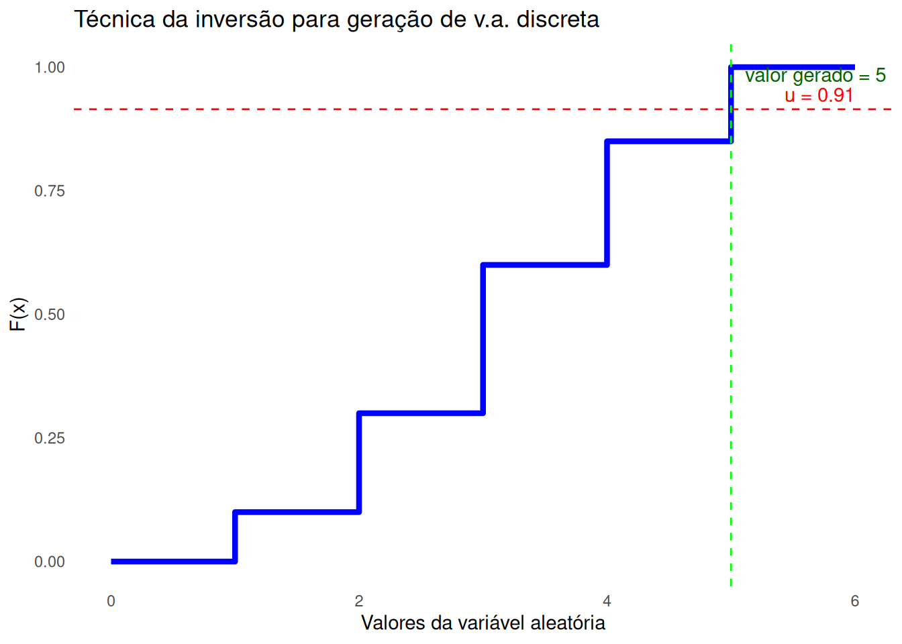
Mostrar código
import numpy as npimport matplotlib.pyplot as pltnp.random.seed(42)# Exemplo de valores e probabilidades de uma variável aleatória discretavalores = [0, 1, 2, 3, 4, 5, 6]probabilidades = [0, 0.1, 0.2, 0.3, 0.25, 0.15, 0]# np.cumsum acumula as probabilidades: cdf[i] = p(x_1) + ... + p(x_i) = F(x_i)cdf = np.cumsum(probabilidades)# Passo 1 do algoritmo: gerar um número aleatório uniformeu = np.random.uniform(0, 1)# Passo 2: percorrer os valores em ordem e parar no primeiro com F(x_i) >= uvalor_gerado =Nonefor i, valor inenumerate(valores):if u <= cdf[i]: valor_gerado = valorbreak# encontramos o menor x_i; não precisamos olhar os seguintesprint(valor_gerado)
3
Mostrar código
plt.figure(figsize=(10, 6))# Gráfico da f.d.a. com o número aleatório u e o valor geradoplt.step(valores, cdf, label='F(x)', color='blue', linewidth=2, where='post')plt.axhline(y=u, color='red', linestyle='--', label=f'u = {u:.2f}')plt.axvline(x=valor_gerado, color='green', linestyle='--', label=f'valor gerado = {valor_gerado}')plt.title('Técnica da inversão para geração de v.a. discreta')plt.xlabel('Valores da variável aleatória')plt.ylabel('F(x)')plt.legend()plt.grid(True)plt.show()
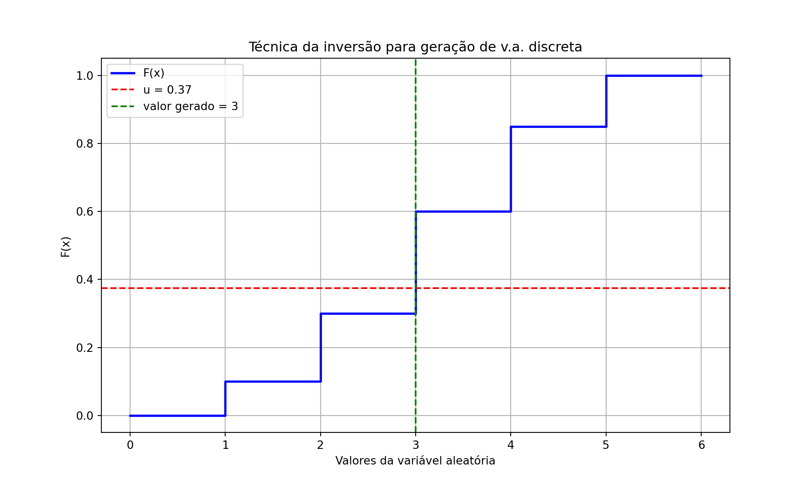
3.3 Por que o método funciona
Até aqui, o algoritmo foi apresentado como uma receita. A proposição a seguir garante que ele de fato produz a distribuição desejada.
Proposição
Considere uma v.a. discreta \(X\) com suporte ordenado \(x_1<x_2<\cdots\) e probabilidades \(p_i=\mathbb{P}(X=x_i)\). Defina \(F(x_i)=\sum_{j\le i}p_j\) e \(F(x)=0\) para \(x<x_1\). Seja \(U\sim\text{Unif}(0,1)\) e
\[
\tilde{X}=\min\{x_i:\,F(x_i)\ge U\}.
\]
Então \(\tilde{X}\) tem a mesma distribuição de \(X\).
Demonstração
O algoritmo devolve \(x_i\) exatamente quando a soma acumulada ainda não havia alcançado \(U\) no passo anterior, mas passa a alcançá-la em \(x_i\). Ou seja, para cada \(i\ge1\),
onde convencionamos \(F(x_0)=0\). Como \(U\sim\text{Unif}(0,1)\), a probabilidade de \(U\) cair em um intervalo contido em \((0,1)\) é o comprimento desse intervalo. Logo,
Portanto, \(\tilde{X}\) reproduz exatamente a função de probabilidade desejada. \(\square\)
3.4 Exemplo 1: Geração de uma Bernoulli por inversão
Para \(X\sim\text{Bernoulli}(p)\), temos \(\mathbb P(X=0)=1-p\), \(\mathbb P(X=1)=p\) e
\[
F(0)=1-p,\quad F(1)=1.
\]
Assim, o método da inversão consiste em gerar \(U\sim\text{Unif}(0,1)\) e devolver o menor valor cuja acumulada alcança \(U\): se \(U\le F(0)=1-p\), o menor valor é \(0\); caso contrário, é \(1\). Ou seja,
([<matplotlib.axis.XTick object at 0x7f396112e0d0>, <matplotlib.axis.XTick object at 0x7f396112d950>], [Text(0.0, 0, '0'), Text(1.0, 0, '1')])
Mostrar código
plt.xlabel('Valor de X')plt.ylabel('Probabilidade')plt.title(f'Bernoulli(p) com p = {p:.2f} — n = {n}')plt.legend()plt.grid(True, axis='y')plt.show()
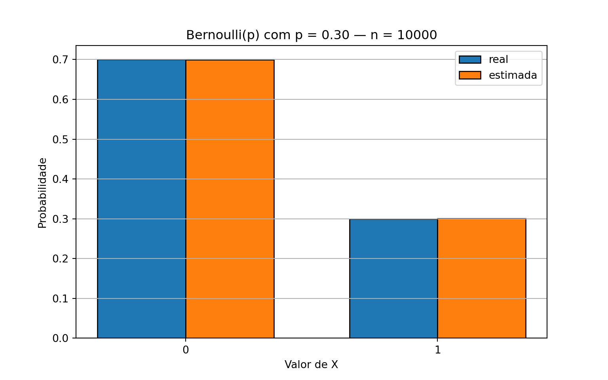
3.5 Exemplo 2: Geração de Variáveis Aleatórias com Distribuição Geométrica
A distribuição geométrica modela o número de falhas até o primeiro sucesso em uma sequência de experimentos de Bernoulli. Se a probabilidade de sucesso em cada tentativa é \(p\), a função de probabilidade é dada por
onde \(k\) representa o número de falhas antes do primeiro sucesso.
Nos exemplos anteriores o suporte era finito e pequeno, então dava para percorrer os valores um a um. Aqui o suporte é infinito, e vale a pena obter uma fórmula fechada para \(F^{-1}\). Começamos calculando a f.d.a., usando a soma da progressão geométrica \(\sum_{x=0}^{k} r^x = \frac{1 - r^{k+1}}{1 - r}\) com \(r = 1-p\):
Queremos agora a inversa da f.d.a., ou seja, dado \(u \in (0,1)\), o menor inteiro \(k\) tal que \(F(k) \geq u\). Note que a condição é uma desigualdade, e não uma igualdade: como \(X\) é discreta, em geral não existe \(k\) inteiro com \(F(k) = u\) exatamente. Vamos resolver a desigualdade passo a passo.
Partimos de
\[
1 - (1 - p)^{k+1} \geq u.
\]
Isolando o termo \((1-p)^{k+1}\) (subtraindo \(1\) dos dois lados e multiplicando por \(-1\), o que inverte a desigualdade):
\[
(1 - p)^{k+1} \leq 1 - u.
\]
Aplicamos agora o logaritmo natural nos dois lados. Como o logaritmo é crescente, a desigualdade se mantém:
Usando a propriedade que permite trazer o expoente para frente:
\[
(k+1) \cdot \log(1 - p) \leq \log(1 - u).
\]
Atenção: a desigualdade se inverte aqui
Para \(0 < p < 1\) temos \(0 < 1-p < 1\), e portanto \(\log(1-p) < 0\). Ao dividir os dois lados por \(\log(1-p)\), estamos dividindo por um número negativo, e o sentido da desigualdade se inverte. Esquecer disso é um erro comum e leva a uma fórmula com \(\lfloor \cdot \rfloor\) no lugar de \(\lceil \cdot \rceil\).
# Função que calcula a inversa da f.d.a. da geométricainversa_cdf_geometrica <-function(p, u) {# k = número de falhas antes do 1º sucessoceiling(log(1- u) /log(1- p) -1)}# Parâmetro p da distribuição geométricap <-0.5set.seed(123)# Gerando 1000 números uniformesn <-1000uniformes <-runif(n)# sapply aplica a função a cada elemento de `uniformes` e devolve um vetor com# os 1000 resultados; é uma forma compacta de escrever um laço forgeometricas <-sapply(uniformes, inversa_cdf_geometrica, p = p)# Plotando um histograma das variáveis geométricas geradaslibrary(ggplot2)# Função de probabilidade teórica da geométrica: P(X = k) = p (1 - p)^kk_teorico <-0:max(geometricas)df_teorico <-data.frame(k = k_teorico, prob = p * (1- p)^k_teorico)# binwidth = 1 com boundary = -0.5 deixa uma barra centrada em cada inteiro.# Com after_stat(density) a altura de cada barra é a frequência relativa, que# pode ser comparada diretamente com a função de probabilidade teóricadf <-data.frame(geometricas = geometricas)ggplot(df, aes(x = geometricas)) +geom_histogram(aes(y =after_stat(density)), binwidth =1, boundary =-0.5,closed ="left", color ="black", fill ="skyblue") +geom_point(data = df_teorico, aes(x = k, y = prob), color ="red", size =2) +labs(title ="Geométricas geradas pela inversa da f.d.a. (p = 0.5)",subtitle ="Pontos vermelhos: função de probabilidade teórica.",x ="Número de falhas antes do primeiro sucesso",y ="Frequência relativa") +theme_minimal() +theme(panel.grid.major =element_blank())
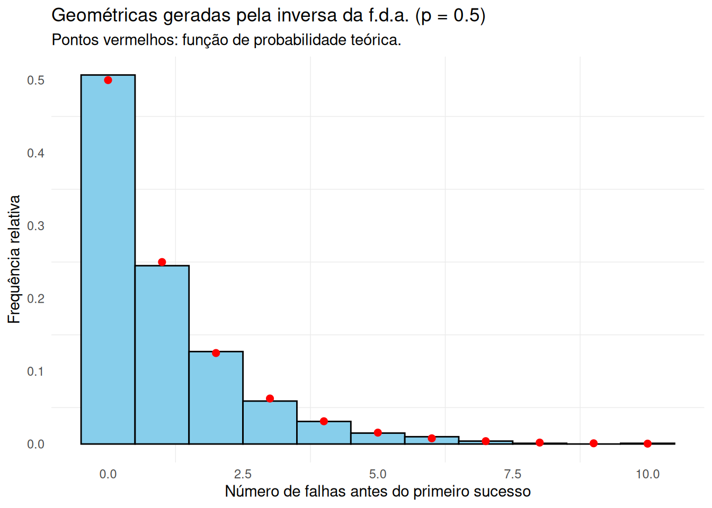
Mostrar código
# Função para calcular a f.d.a. da distribuição geométricacdf_geometrica <-function(k, p) {1- (1- p)^(k +1)}# Gerando valores de k para plotar a f.d.a.k_values <-0:20cdf_values <-sapply(k_values, cdf_geometrica, p = p)# Plotando a f.d.a. da distribuição geométricadf_cdf <-data.frame(k_values = k_values, cdf_values = cdf_values)ggplot(df_cdf, aes(x = k_values, y = cdf_values)) +geom_step(direction ="hv", color ="blue", linewidth =1.5) +labs(title ="f.d.a. da distribuição geométrica (p = 0.5)",x ="k (número de falhas antes do primeiro sucesso)",y ="F(k)") +theme_minimal() +theme(panel.grid.major =element_blank())
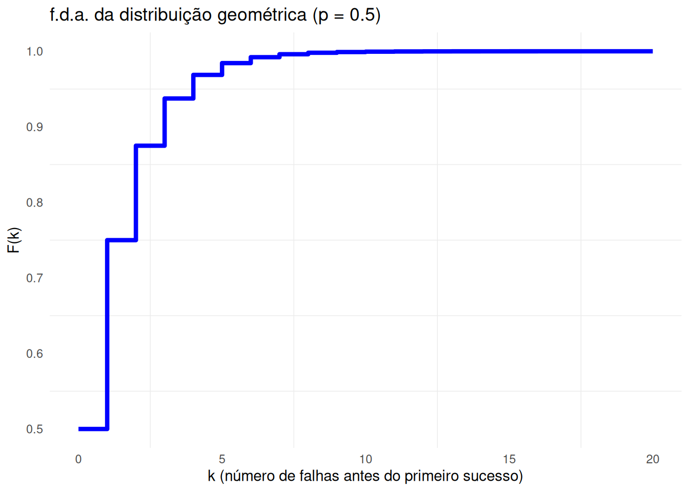
Mostrar código
import numpy as npimport mathimport matplotlib.pyplot as plt# Função que calcula a inversa da f.d.a. da geométricadef inversa_cdf_geometrica(p, u):# k = número de falhas antes do 1º sucessoreturn math.ceil(math.log(1- u) / math.log(1- p) -1)# Parâmetro p da distribuição geométricap =0.5np.random.seed(123)# Gerando 1000 números uniformesn =1000uniformes = np.random.uniform(0, 1, n)# A list comprehension abaixo aplica a função a cada elemento de `uniformes` e# devolve uma lista com os 1000 resultados; é uma forma compacta de escrever um forgeometricas = [inversa_cdf_geometrica(p, u) for u in uniformes]# Função de probabilidade teórica da geométrica: P(X = k) = p (1 - p)^kk_teorico = np.arange(0, max(geometricas) +1)prob_teorica = p * (1- p)**k_teorico# Plotando um histograma das variáveis geométricas geradas# align='left' com bins inteiros deixa uma barra centrada em cada inteiro.# Com density=True a altura de cada barra é a frequência relativa, que pode ser# comparada diretamente com a função de probabilidade teóricaplt.figure(figsize=(10, 6))plt.hist(geometricas, bins=range(0, max(geometricas) +2), # +2 para incluir o último valor color='skyblue', edgecolor='black', align='left', density=True)plt.plot(k_teorico, prob_teorica, 'o', color='red', markersize=6)plt.title('Geométricas geradas pela inversa da f.d.a. (p = 0.5)\n''Pontos vermelhos: função de probabilidade teórica.')plt.xlabel('Número de falhas antes do primeiro sucesso')plt.ylabel('Frequência relativa')plt.grid(True)plt.show()
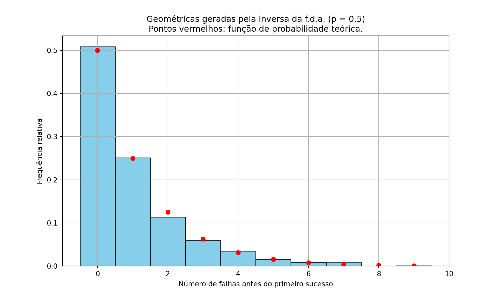
Mostrar código
# Função para calcular a f.d.a. da distribuição geométricadef cdf_geometrica(k, p):return1- (1- p)**(k +1)# Gerando valores de k para plotar a f.d.a.k_values = np.arange(0, 21)cdf_values = [cdf_geometrica(k, p) for k in k_values]# Plotando a f.d.a. da distribuição geométricaplt.figure(figsize=(10, 6))plt.step(k_values, cdf_values, where='post', color='blue', linewidth=2)plt.title('f.d.a. da distribuição geométrica (p = 0.5)')plt.xlabel('k (número de falhas antes do primeiro sucesso)')plt.ylabel('F(k)')plt.grid(True)plt.show()
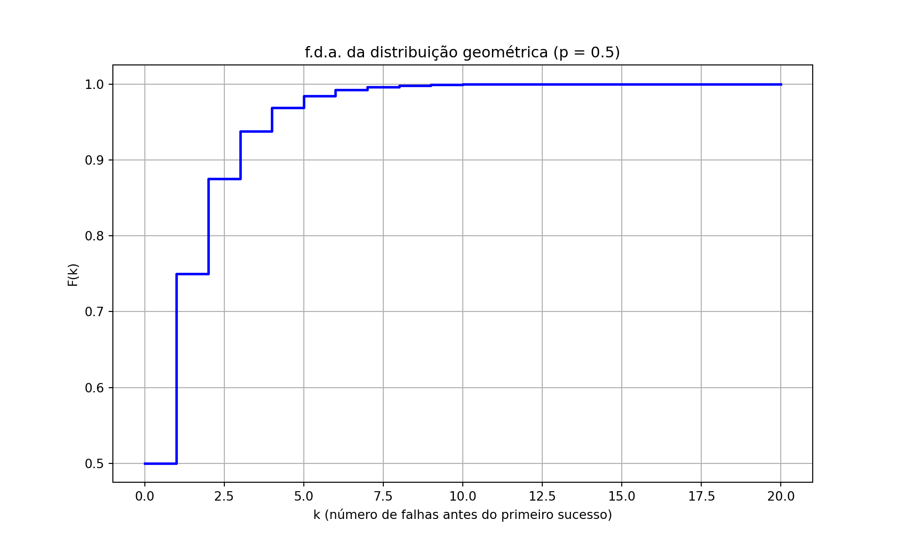
3.6 Exemplo 3: Geração de Variáveis Aleatórias com Distribuição Poisson
A distribuição de Poisson é usada para modelar o número de eventos que ocorrem em um intervalo de tempo ou espaço fixo, quando os eventos ocorrem com uma taxa constante \(\lambda\) e de forma independente.
A função de probabilidade da distribuição de Poisson é dada por
Diferentemente da geométrica, aqui não há fórmula fechada simples para \(F^{-1}\): vamos ter que voltar à ideia de acumular as probabilidades uma a uma até ultrapassar \(U\). O problema é que calcular \(\mathbb{P}(X=k)\) do zero para cada \(k\) exige recalcular \(\lambda^k\) e \(k!\), o que é caro e, para \(k\) grande, chega a estourar a capacidade numérica do computador.
A saída é notar que as probabilidades da Poisson satisfazem a relação recursiva
# Gera um valor de Poisson por inversão, usando a fórmula recursivainversa_cdf_poisson_recursiva <-function(lam, u) { k <-0 p <-exp(-lam) # P(X = 0) F_acm <- p # acumulada até k = 0# Continuamos somando até que F(k) >= uwhile (u > F_acm) { k <- k +1 p <- p * lam / k # atualiza P(X = k) a partir de P(X = k-1) F_acm <- F_acm + p }return(k)}# Parâmetro lambda da distribuição Poissonlam <-3set.seed(123)# Gerando 1000 números uniformesn <-1000uniformes <-runif(n)# sapply aplica a função a cada elemento de `uniformes` e devolve um vetor com# os 1000 resultados; é uma forma compacta de escrever um laço forpoisson_vars <-sapply(uniformes, inversa_cdf_poisson_recursiva, lam = lam)# Plotando o histograma das variáveis Poisson geradaslibrary(ggplot2)# Função de probabilidade teórica da Poisson: P(X = k) = e^{-λ} λ^k / k!k_teorico <-0:max(poisson_vars)df_teorico <-data.frame(k = k_teorico,prob =exp(-lam) * lam^k_teorico /factorial(k_teorico))# binwidth = 1 com boundary = -0.5 deixa uma barra centrada em cada inteiro.# Com after_stat(density) a altura de cada barra é a frequência relativa, que# pode ser comparada diretamente com a função de probabilidade teóricadf <-data.frame(poisson_vars = poisson_vars)ggplot(df, aes(x = poisson_vars)) +geom_histogram(aes(y =after_stat(density)), binwidth =1, boundary =-0.5,closed ="left", color ="black", fill ="skyblue") +geom_point(data = df_teorico, aes(x = k, y = prob), color ="red", size =2) +labs(title ="Poisson geradas pela fórmula recursiva (λ = 3)",subtitle ="Pontos vermelhos: função de probabilidade teórica.",x ="Número de eventos",y ="Frequência relativa") +theme_minimal() +theme(panel.grid.major =element_blank())
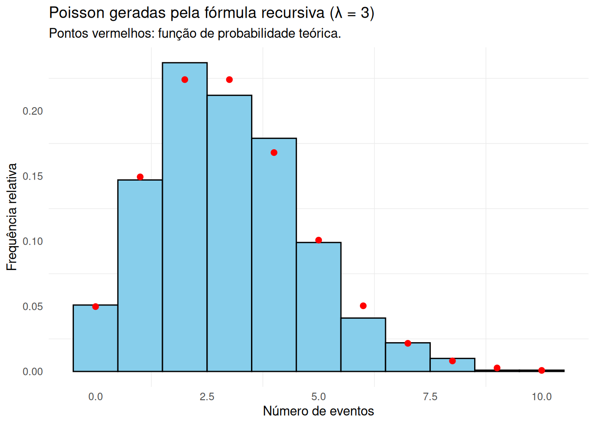
Mostrar código
# Função para calcular a f.d.a. da Poisson, também pela recursãocdf_poisson <-function(k, lam) { cdf <-0 p <-exp(-lam) # P(X = 0)for (i in0:k) { cdf <- cdf + p # acumula P(X = i)if (i < k) { p <- p * lam / (i +1) # atualiza para o próximo valor } }return(cdf)}# Gerando valores de k para a f.d.a.k_values <-0:14cdf_values <-sapply(k_values, cdf_poisson, lam = lam)# Plotando a f.d.a. da distribuição Poissondf_cdf <-data.frame(k_values = k_values, cdf_values = cdf_values)ggplot(df_cdf, aes(x = k_values, y = cdf_values)) +geom_step(direction ="hv", color ="blue", linewidth =1.5) +labs(title ="f.d.a. da distribuição Poisson (λ = 3)",x ="k (número de eventos)",y ="F(k)") +theme_minimal() +theme(panel.grid.major =element_blank())
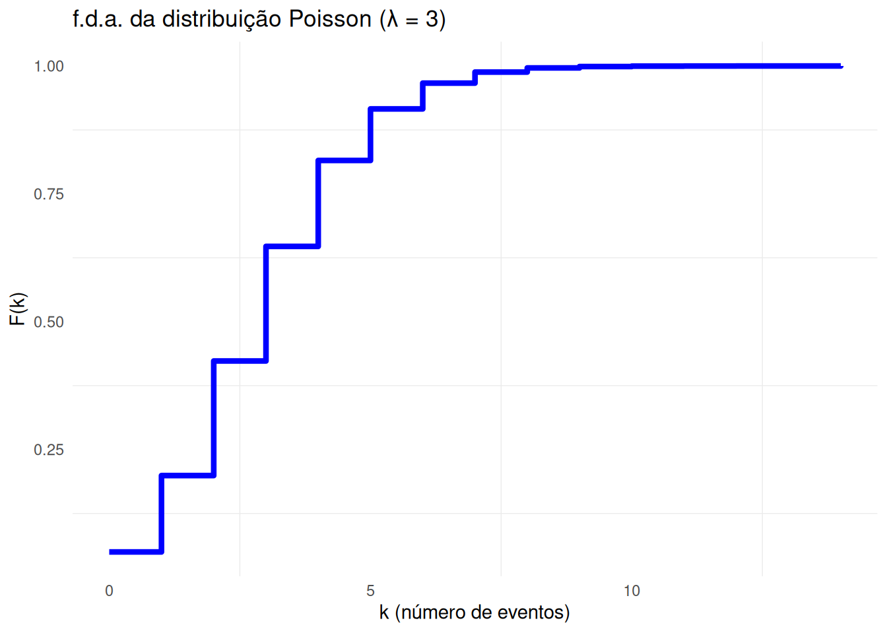
Mostrar código
import numpy as npimport matplotlib.pyplot as pltimport math# Gera um valor de Poisson por inversão, usando a fórmula recursivadef inversa_cdf_poisson_recursiva(lam, u): k =0 p = math.exp(-lam) # P(X = 0) F_acm = p # acumulada até k = 0# Continuamos somando até que F(k) >= uwhile u > F_acm: k +=1 p = p * lam / k # atualiza P(X = k) a partir de P(X = k-1) F_acm += preturn k# Parâmetro lambda da distribuição Poissonlam =3np.random.seed(123)# Gerando 1000 números uniformesn =1000uniformes = np.random.uniform(0, 1, n)# A list comprehension abaixo aplica a função a cada elemento de `uniformes` e# devolve uma lista com os 1000 resultados; é uma forma compacta de escrever um forpoisson_vars = [inversa_cdf_poisson_recursiva(lam, u) for u in uniformes]# Função de probabilidade teórica da Poisson: P(X = k) = e^{-λ} λ^k / k!k_teorico = np.arange(0, max(poisson_vars) +1)prob_teorica = [math.exp(-lam) * lam**k / math.factorial(k) for k in k_teorico]# Plotando o histograma das variáveis Poisson geradas# align='left' com bins inteiros deixa uma barra centrada em cada inteiro.# Com density=True a altura de cada barra é a frequência relativa, que pode ser# comparada diretamente com a função de probabilidade teóricaplt.figure(figsize=(10, 6))plt.hist(poisson_vars, bins=range(0, max(poisson_vars) +2), # +2 para incluir o último valor color='skyblue', edgecolor='black', align='left', density=True)plt.plot(k_teorico, prob_teorica, 'o', color='red', markersize=6)plt.title('Poisson geradas pela fórmula recursiva (λ = 3)\n''Pontos vermelhos: função de probabilidade teórica.')plt.xlabel('Número de eventos')plt.ylabel('Frequência relativa')plt.grid(True)plt.show()
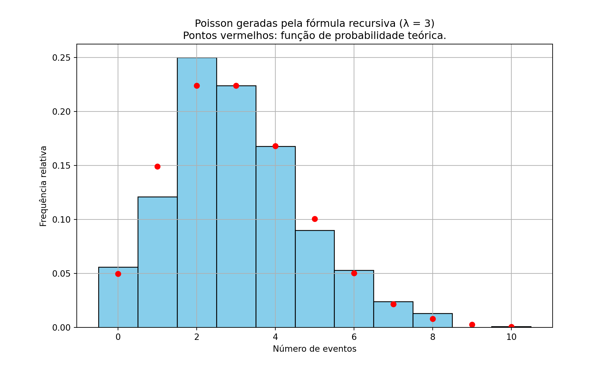
Mostrar código
# Função para calcular a f.d.a. da Poisson, também pela recursãodef cdf_poisson(k, lam): cdf =0 p = math.exp(-lam) # P(X = 0)for i inrange(k +1): cdf += p # acumula P(X = i)if i < k: p = p * lam / (i +1) # atualiza para o próximo valorreturn cdf# Gerando valores de k para a f.d.a.k_values = np.arange(0, 15)cdf_values = [cdf_poisson(k, lam) for k in k_values]# Plotando a f.d.a. da distribuição Poissonplt.figure(figsize=(10, 6))plt.step(k_values, cdf_values, where='post', color='blue', linewidth=2)plt.title('f.d.a. da distribuição Poisson (λ = 3)')plt.xlabel('k (número de eventos)')plt.ylabel('F(k)')plt.grid(True)plt.show()
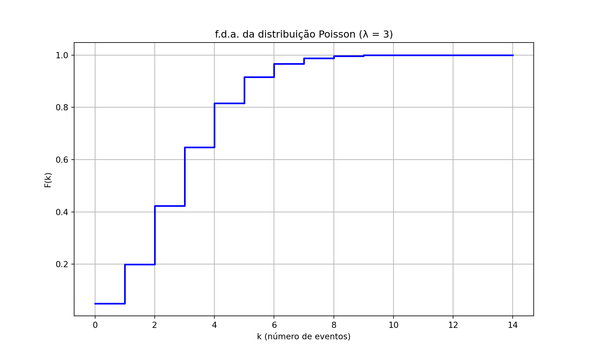
3.7 Exemplo 4: permutações e amostragem sem reposição
Nos três exemplos anteriores, cada chamada do algoritmo devolvia um número, e as chamadas eram independentes umas das outras. Este exemplo é diferente: o objeto sorteado é uma permutação — uma reordenação de \(n\) elementos, sorteada uniformemente entre as \(n!\) possíveis — e, a partir dela, uma amostra sem reposição.
Essas duas operações aparecem o tempo todo: ao separar um conjunto de dados em treino e teste (como fizemos no Capítulo 1 com os dados iris), ao sortear a ordem em que os tratamentos são aplicados em um experimento, ou ao sortear quem será entrevistado em uma pesquisa. Em todos os casos, a exigência é a mesma: nenhum arranjo pode ser mais provável que outro.
3.7.1 O ingrediente básico: a uniforme discreta
O bloco de construção é a distribuição uniforme sobre \(\{1, 2, \ldots, k\}\), isto é, \(\mathbb{P}(X = i) = 1/k\) para todo \(i\). Aqui a inversão fica especialmente simples, porque a f.d.a. é \(F(i) = i/k\): o menor \(i\) com \(i/k \geq U\) é
\[
X = \lceil k\,U \rceil,
\]
onde \(\lceil \cdot \rceil\) é o teto, o menor inteiro maior ou igual ao argumento. Diferentemente dos exemplos anteriores, não é preciso percorrer valor por valor: uma conta resolve.
Por que \(\lceil kU \rceil\) e não \(\lfloor kU \rfloor\)
Se usássemos o piso \(\lfloor kU \rfloor\), obteríamos valores em \(\{0, 1, \ldots, k-1\}\) — o que também é uniforme, mas sobre o conjunto errado. A forma equivalente para começar em 1 é \(\lfloor kU \rfloor + 1\). Note que \(\lceil kU \rceil\) só difere dessa segunda expressão quando \(kU\) é exatamente um inteiro, o que tem probabilidade zero.
3.7.2 Embaralhamento de Fisher–Yates
Uma ideia que não funciona é sortear uma posição para cada elemento de forma independente: dois elementos podem cair na mesma posição. O algoritmo de Fisher–Yates resolve isso decidindo as posições uma de cada vez, sempre sorteando entre os elementos que ainda não foram fixados.
Pseudo-algoritmo: embaralhamento de Fisher–Yates
Entrada: um vetor \(v = (v_1, \ldots, v_n)\).
Para \(i = n, n-1, \ldots, 2\):
Sorteie \(j\) uniformemente em \(\{1, 2, \ldots, i\}\), isto é, gere \(U \sim \text{Unif}(0,1)\) e faça \(j = \lceil i\,U \rceil\);
Troque \(v_i\) e \(v_j\) de lugar.
Devolva \(v\).
O laço fixa a última posição primeiro: no passo \(i = n\), o elemento que vai ocupar a posição \(n\) é sorteado uniformemente entre os \(n\) disponíveis. No passo seguinte, a posição \(n-1\) recebe um dos \(n-1\) elementos restantes, e assim por diante.
Proposição
O algoritmo acima devolve cada uma das \(n!\) permutações de \(v\) com probabilidade \(1/n!\).
Demonstração
O algoritmo faz \(n-1\) sorteios independentes: no passo \(i\), o valor de \(j\) tem \(i\) possibilidades igualmente prováveis. O número de sequências de sorteios \((j_n, j_{n-1}, \ldots, j_2)\) é, portanto,
\[
n \times (n-1) \times \cdots \times 2 = n!,
\]
e todas elas têm a mesma probabilidade \(1/n!\), por independência.
Falta ver que sequências de sorteios diferentes produzem permutações diferentes. Isso vale porque o algoritmo pode ser desfeito: dada a permutação final, a última troca (a do passo \(i = 2\)) pode ser revertida, revelando \(j_2\); depois a do passo \(i = 3\), revelando \(j_3\); e assim por diante. Ou seja, a permutação final determina a sequência de sorteios.
Temos então \(n!\) sequências de sorteios, todas com a mesma probabilidade, em correspondência um a um com as \(n!\) permutações possíveis. Logo cada permutação tem probabilidade \(1/n!\). \(\square\)
O código abaixo implementa o pseudo-algoritmo e o verifica no menor caso em que a verificação é possível: com \(n = 3\) existem \(3! = 6\) permutações, e podemos contar quantas vezes cada uma aparece em 6000 embaralhamentos. O esperado é \(1/6 \approx 0{,}1667\) para cada.
library(ggplot2)set.seed(42)embaralhar <-function(v) { n <-length(v)# O laço vai do fim para o começo: primeiro decidimos quem fica na última# posição, depois na penúltima, e assim por diantefor (i in n:2) {# Sorteio uniforme em {1, ..., i}, pela inversão da uniforme discreta j <-ceiling(i *runif(1))# Troca de v[i] com v[j]; a variável temp guarda o valor que seria perdido temp <- v[i] v[i] <- v[j] v[j] <- temp }return(v)}# Verificação: as 6 permutações de (1, 2, 3) devem sair com a mesma frequênciaB <-6000permutacoes <-character(B)for (b in1:B) {# paste(..., collapse = "") transforma o vetor c(2, 3, 1) no texto "231",# para que possamos contar as repetições com table() permutacoes[b] <-paste(embaralhar(1:3), collapse ="")}frequencias <-table(permutacoes) / Bprint(round(frequencias, 4))
df <-data.frame(permutacao =names(frequencias),frequencia =as.numeric(frequencias))# A linha vermelha marca o valor teórico 1/6ggplot(df, aes(x = permutacao, y = frequencia)) +geom_col(fill ="skyblue", color ="black") +geom_hline(yintercept =1/6, color ="red", linewidth =1) +labs(title ="Frequência das 6 permutações de (1, 2, 3) em 6000 embaralhamentos",x ="Permutação obtida", y ="Frequência relativa") +theme_minimal()
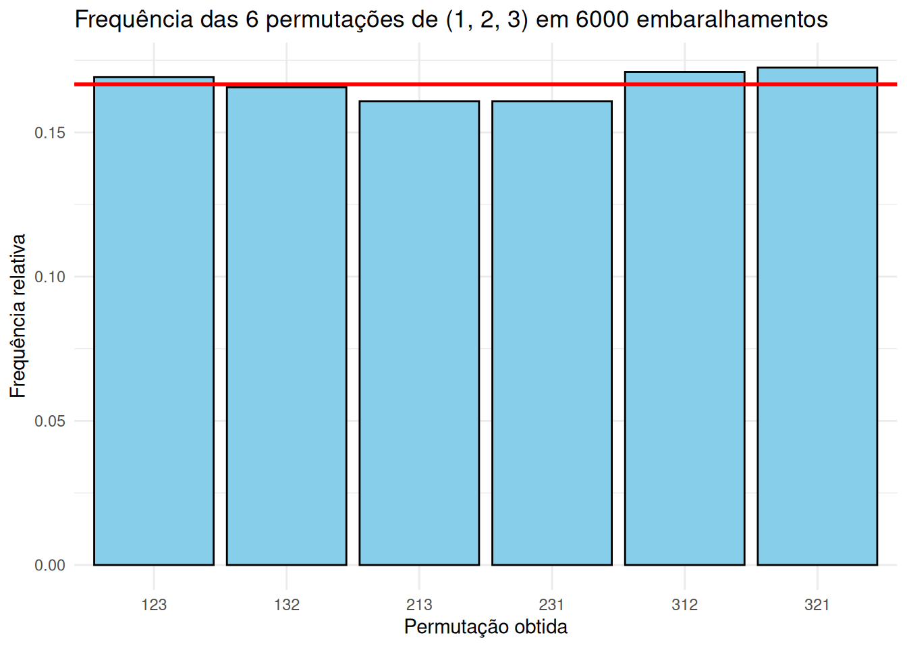
Mostrar código
import numpy as npimport matplotlib.pyplot as pltnp.random.seed(42)def embaralhar(v):# Em Python, listas são passadas por referência: sem esta cópia, a função# alteraria a lista original de quem a chamou v =list(v) n =len(v)# O laço vai do fim para o começo: primeiro decidimos quem fica na última# posição, depois na penúltima, e assim por diantefor i inrange(n, 1, -1):# Sorteio uniforme em {1, ..., i}, pela inversão da uniforme discreta j =int(np.ceil(i * np.random.uniform()))# Troca de v[i] com v[j]. Atenção: as posições da lista começam em 0,# por isso subtraímos 1 dos índices v[i -1], v[j -1] = v[j -1], v[i -1]return v# Verificação: as 6 permutações de (1, 2, 3) devem sair com a mesma frequênciaB =6000contagem = {}for b inrange(B):# A permutação [2, 3, 1] vira o texto "231", para podermos contar repetições chave ="".join(str(x) for x in embaralhar([1, 2, 3])) contagem[chave] = contagem.get(chave, 0) +1permutacoes =sorted(contagem)frequencias = [contagem[p] / B for p in permutacoes]for p, f inzip(permutacoes, frequencias):print(p, round(f, 4))
# A linha vermelha marca o valor teórico 1/6plt.figure(figsize=(10, 5))plt.bar(permutacoes, frequencias, color='skyblue', edgecolor='black')plt.axhline(1/6, color='red', linewidth=2)plt.title('Frequência das 6 permutações de (1, 2, 3) em 6000 embaralhamentos')plt.xlabel('Permutação obtida')plt.ylabel('Frequência relativa')plt.show()
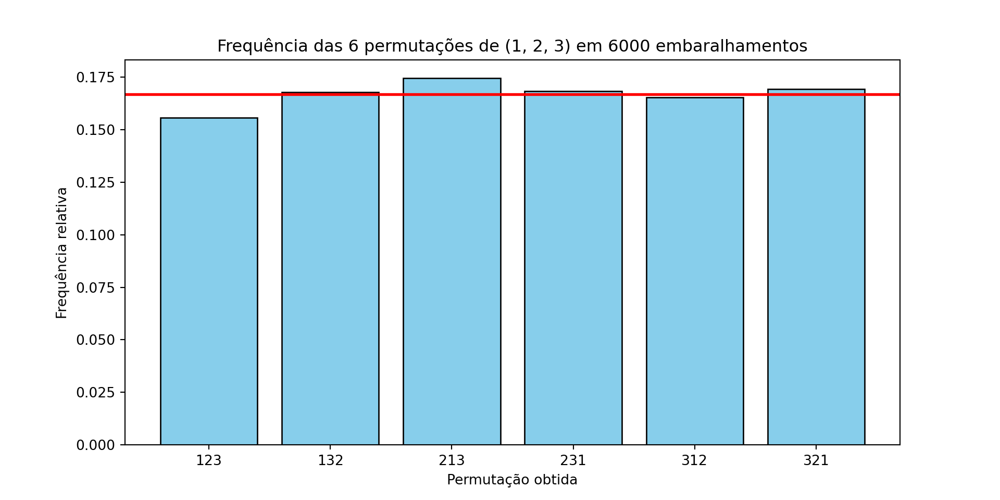
3.7.3 Amostragem sem reposição
Sortear \(k\) elementos entre \(n\), sem repetir nenhum, é o mesmo algoritmo interrompido no meio. Depois do primeiro passo, a posição \(n\) guarda um elemento sorteado uniformemente entre os \(n\); depois do segundo, as posições \(n\) e \(n-1\) guardam dois elementos distintos; e assim por diante. Basta então rodar o laço \(k\) vezes e devolver as \(k\) últimas posições.
Pseudo-algoritmo: amostra de tamanho \(k\) sem reposição
Entrada: um vetor \(v = (v_1, \ldots, v_n)\) e o tamanho \(k \leq n\) da amostra.
Para \(i = n, n-1, \ldots, n-k+1\):
Sorteie \(j\) uniformemente em \(\{1, \ldots, i\}\);
Troque \(v_i\) e \(v_j\) de lugar.
Devolva \((v_{n-k+1}, \ldots, v_n)\).
Para verificar, sorteamos 10 000 amostras de tamanho \(k = 3\) entre \(n = 10\) elementos e contamos com que frequência cada elemento aparece. Como todos os elementos têm a mesma chance de entrar na amostra, essa frequência deve ficar próxima de \(k/n = 0{,}3\).
set.seed(42)amostrar_sem_reposicao <-function(v, k) { n <-length(v)# Mesmo laço do embaralhamento, mas parando depois de k passosfor (i in n:(n - k +1)) { j <-ceiling(i *runif(1)) temp <- v[i] v[i] <- v[j] v[j] <- temp }# As k últimas posições são a amostrareturn(v[(n - k +1):n])}cat("Uma amostra de tamanho 3 entre 10 elementos:",amostrar_sem_reposicao(1:10, 3), "\n")
Uma amostra de tamanho 3 entre 10 elementos: 3 9 10
Mostrar código
# Verificação: com que frequência cada elemento entra na amostra?n <-10k <-3B <-10000contagem <-numeric(n)for (b in1:B) { amostra <-amostrar_sem_reposicao(1:n, k) contagem[amostra] <- contagem[amostra] +1}cat("Proporção das amostras que contêm cada elemento (esperado k/n = 0,3):\n")
Proporção das amostras que contêm cada elemento (esperado k/n = 0,3):
np.random.seed(42)def amostrar_sem_reposicao(v, k): v =list(v) n =len(v)# Mesmo laço do embaralhamento, mas parando depois de k passosfor i inrange(n, n - k, -1): j =int(np.ceil(i * np.random.uniform())) v[i -1], v[j -1] = v[j -1], v[i -1]# As k últimas posições são a amostrareturn v[n - k:]print("Uma amostra de tamanho 3 entre 10 elementos:", amostrar_sem_reposicao(range(1, 11), 3))
Uma amostra de tamanho 3 entre 10 elementos: [6, 9, 4]
Mostrar código
# Verificação: com que frequência cada elemento entra na amostra?n =10k =3B =10000contagem = np.zeros(n)for b inrange(B): amostra = amostrar_sem_reposicao(range(1, n +1), k)for x in amostra: contagem[x -1] +=1print("Proporção das amostras que contêm cada elemento (esperado k/n = 0,3):")
Proporção das amostras que contêm cada elemento (esperado k/n = 0,3):
Sortear \(k\) valores com reposição — o que sample(v, k, replace = TRUE) e np.random.choice(v, k) fazem — é o problema dos exemplos anteriores, repetido \(k\) vezes de forma independente, e pode devolver o mesmo elemento mais de uma vez. Sem reposição, os sorteios não são independentes: a cada elemento retirado, os demais ficam mais prováveis.
As funções prontas para o caso sem reposição são sample(v) e sample(v, k) no R, e np.random.permutation(v) e np.random.choice(v, k, replace=False) no Python. Todas implementam, por dentro, alguma variante do Fisher–Yates. Foi o que usamos no Capítulo 1 para separar os dados iris em treino e teste — lá, a separação precisava ser sem reposição, sob pena de a mesma flor aparecer nos dois conjuntos.
3.8 Exercícios
Exercício 1. Seja \(X\) uma v.a. tal que \(\mathbb{P}(X=1)=0.3\), \(\mathbb{P}(X=3)=0.1\) e \(\mathbb{P}(X=4)=0.6\).
Escreva um pseudo-algoritmo para gerar um valor de \(X\).
Implemente uma função para gerar \(n\) valores de \(X\).
Compare a distribuição das frequências obtidas na amostra simulada com as probabilidades reais.
Implemente um algoritmo para gerar uma amostra de tamanho \(n\) da distribuição mistura de uma Poisson e de uma Geométrica, com base nas funções implementadas nos Exemplos 2 e 3.
Exercício 3. Seja \(X \sim \text{Binomial}(m,p)\), isto é,
\[
\mathbb{P}(X=k) = \binom{m}{k} p^k (1-p)^{m-k}, \quad k = 0, 1, \ldots, m.
\]
Mostre que as probabilidades satisfazem a relação recursiva
Adapte a função do Exemplo 3 para gerar uma Binomial por inversão usando essa recursão. Assim como no caso da Poisson, você não deve calcular fatoriais nem potências dentro do laço.
Gere 1000 valores com \(m=10\) e \(p=0.3\) e compare o histograma obtido com as probabilidades teóricas.
Diferentemente da Poisson, aqui o laço do algoritmo sempre para em no máximo \(m\) passos. Por quê?
Exercício 4. Este exercício explora o embaralhamento do Exemplo 4.
Uma variante natural — e errada — do Fisher–Yates é sortear \(j\) uniformemente em \(\{1, \ldots, n\}\) a cada passo, em vez de em \(\{1, \ldots, i\}\). Implemente essa versão, gere 6000 permutações de \((1,2,3)\) e compare as frequências das seis permutações com \(1/6\). Em seguida, explique por que ela não pode funcionar: quantas sequências de sorteios equiprováveis o algoritmo produz quando \(n = 3\)? Por que esse número não ser divisível por \(6\) já garante que alguma permutação sai com frequência diferente das outras?
Um desarranjo é uma permutação que não deixa nenhum elemento na posição original. Usando a função embaralhar, estime a probabilidade de que uma permutação aleatória de \((1, \ldots, 10)\) seja um desarranjo e compare com o valor teórico, que é próximo de \(1/e \approx 0{,}3679\). Repita com \(n = 5\) e \(n = 50\): a probabilidade muda muito com \(n\)?
Separe os índices \(1, \ldots, 150\) em um conjunto de treino com 70% dos elementos e um de teste com os 30% restantes, usando amostrar_sem_reposicao e sem chamar sample nem np.random.choice. Confira que os dois conjuntos não têm elementos em comum e que juntos somam 150 índices.
Quantos números uniformes embaralhar consome para um vetor de tamanho \(n\)? E amostrar_sem_reposicao, para uma amostra de tamanho \(k\)? Compare com a alternativa ingênua de sortear \(k\) valores com reposição e recomeçar do zero sempre que houver repetição: para \(n = 365\) e \(k = 23\) (o problema do aniversário), estime por simulação a probabilidade de haver repetição em uma tentativa e o número médio de tentativas até obter 23 valores distintos.
Exercício 5. (Desafio) No algoritmo geral da inversão, os valores \(x_1, x_2, \ldots, x_m\) são percorridos em ordem até que \(F(x_i) \geq U\). O número de comparações feitas até devolver \(x_i\) é, portanto, igual a \(i\).
Mostre que o número esperado de comparações do algoritmo é
\[
\sum_{i=1}^{m} i \cdot p(x_i).
\]
Note que a soma acima depende da ordem em que listamos os valores, embora a distribuição gerada não dependa. Argumente que essa soma é mínima quando os valores estão listados em ordem decrescente de probabilidade.
Considere uma v.a. com probabilidades \((0.05,\, 0.05,\, 0.1,\, 0.2,\, 0.6)\), nessa ordem. Modifique a função que você implementou no Exercício 1 para também contar quantas comparações foram feitas em cada geração. Gere 20000 valores com as probabilidades nessa ordem e depois em ordem decrescente, e compare a média empírica de comparações com o valor previsto pelo item (a).
Exercício 6. (Desafio) O método do alias gera uma v.a. discreta com \(m\) valores fazendo sempre o mesmo trabalho, qualquer que seja \(m\) — em vez do número crescente de comparações do Exercício 5. A ideia é escrever a distribuição como uma mistura de \(m\) distribuições, cada uma concentrada em no máximo dois pontos.
O gerador guarda dois vetores, calculados uma única vez: as probabilidades de corte \(q_1, \ldots, q_m\) e os apelidos (aliases) \(a_1, \ldots, a_m\). O algoritmo é:
Sorteie \(i\) uniformemente em \(\{1, \ldots, m\}\);
Gere \(U \sim \text{Unif}(0,1)\). Se \(U \leq q_i\), devolva \(x_i\); caso contrário, devolva \(x_{a_i}\).
Considere \(X\) com valores \(1, 2, 3, 4\) e probabilidades \((0{,}1;\ 0{,}2;\ 0{,}3;\ 0{,}4)\), e a tabela
Verifique, enumerando os caminhos que levam a cada valor, que o algoritmo devolve exatamente essas probabilidades. Por exemplo, o valor \(3\) pode sair da coluna \(i = 3\) (quando \(U \leq 0{,}6\)) ou da coluna \(i = 1\) (quando \(U > 0{,}4\), pois \(a_1 = 3\)), o que dá \(\frac{1}{4}(0{,}6) + \frac{1}{4}(1 - 0{,}4) = 0{,}15 + 0{,}15 = 0{,}3\).
Implemente o algoritmo com essa tabela, gere 20 000 valores e compare as frequências obtidas com as probabilidades verdadeiras.
Explique por que o custo de gerar um valor não depende de \(m\), e compare com o número esperado de comparações calculado no Exercício 5.
Falta construir a tabela. Multiplique todas as probabilidades por \(m\), de modo que a média passe a ser \(1\). Mostre que, se nem todas forem iguais a \(1\), sempre existem um índice \(i\) com \(m\,p_i \leq 1\) e um índice \(j\) com \(m\,p_j \geq 1\). Faça então \(q_i = m\,p_i\) e \(a_i = j\): a coluna \(i\) fica completa, e o que faltava para enchê-la (\(1 - q_i\)) é descontado de \(m\,p_j\). Repita o procedimento com as \(m-1\) colunas restantes. Implemente essa construção e verifique que ela reproduz a tabela do item (a).